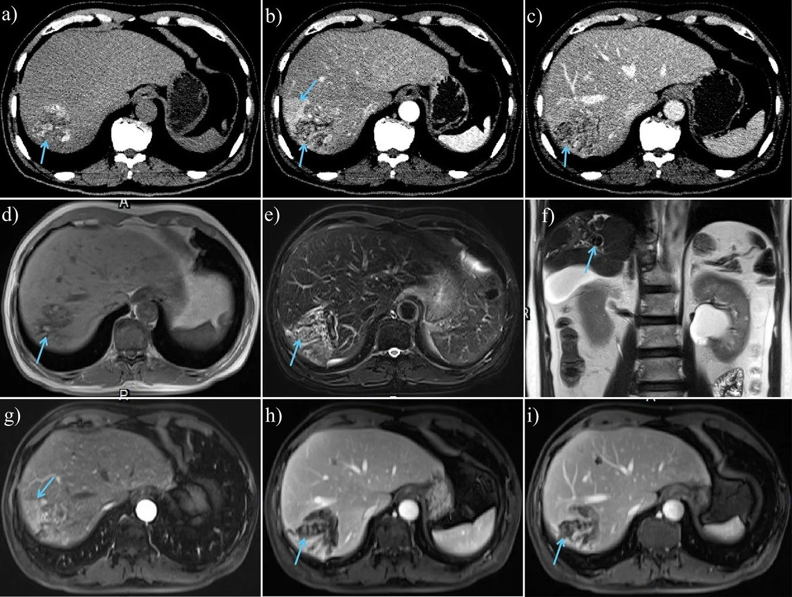
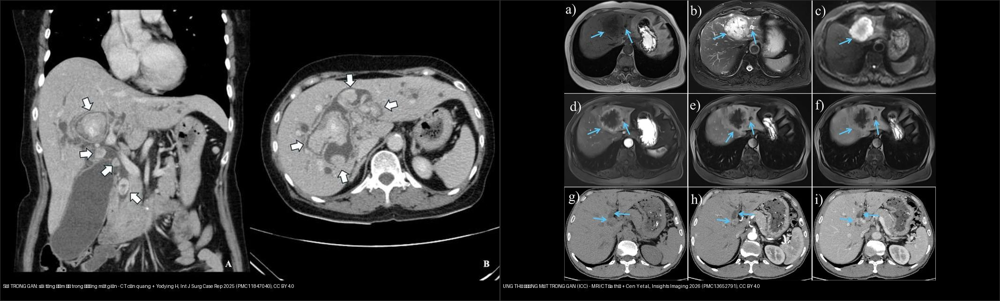
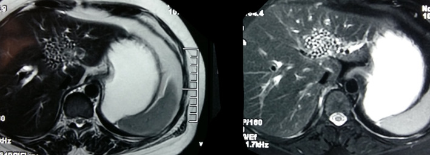
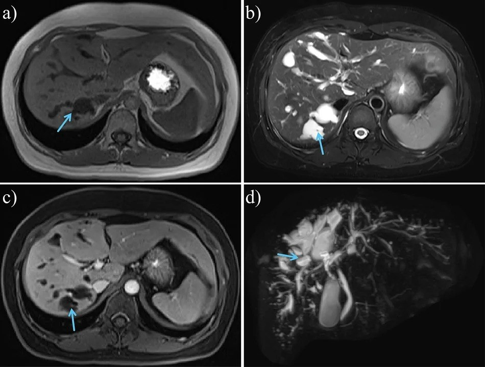
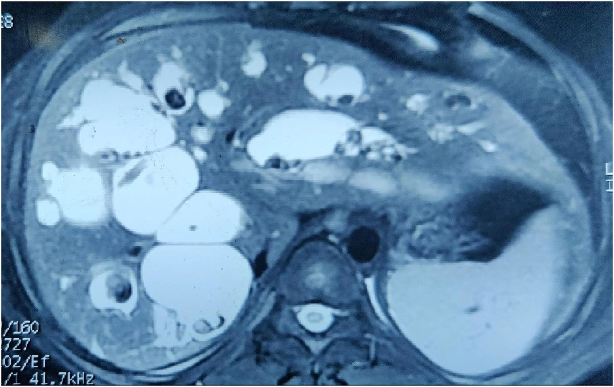
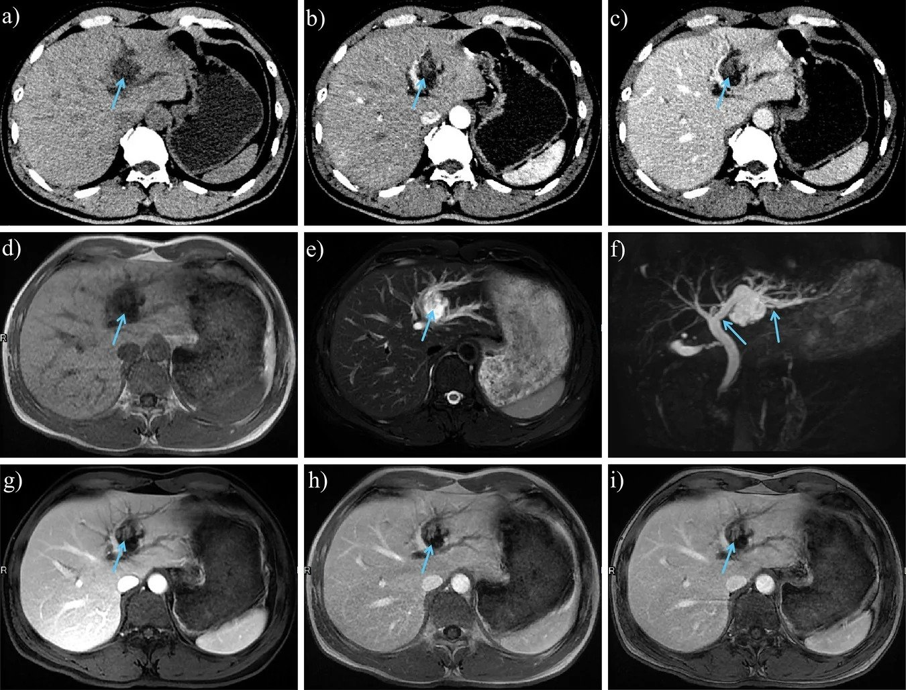
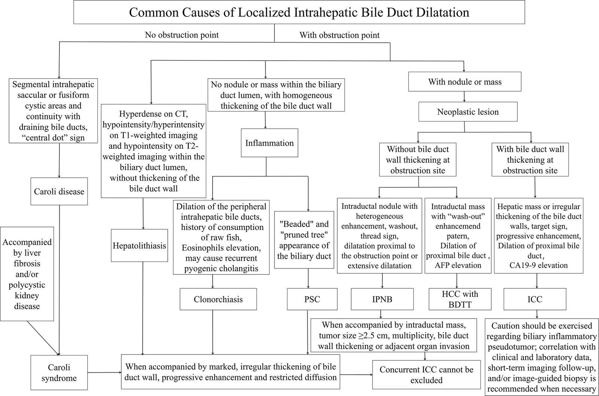
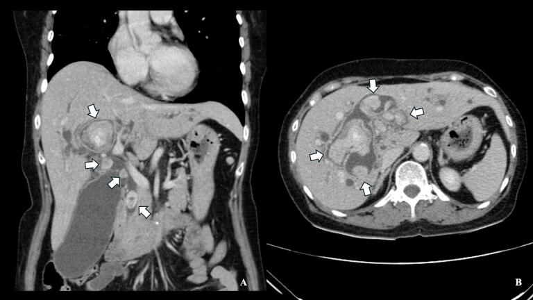
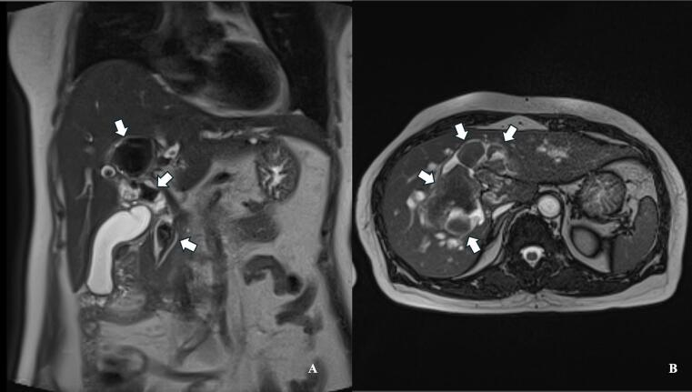
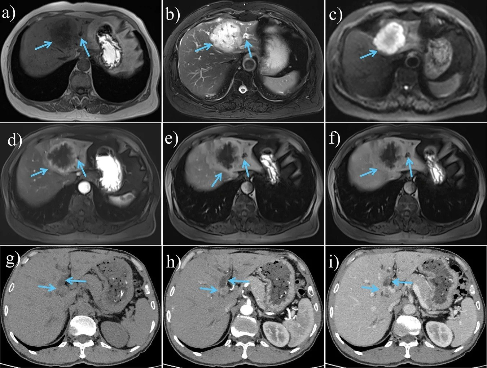

138 — Sỏi trong gan & viêm đường mật mủ tái phát / Hepatolithiasis & recurrent pyogenic cholangitis
Tags: pattern:soi-trong-gan pattern:hep-duong-mat vung:duong-mat-trong-gan protocol:MRCP protocol:CT-bung-co-can-quang incidentaloma:soi-trong-gan
Mức chắc chắn (certainty): tổng hợp y văn (literature synthesis) — nhóm tự biên từ y văn mở; các ca minh họa là ca nguyên văn của bài gốc (giữ đúng tuổi/giới trong chú thích).
1. Tổng quan bệnh học – cơ chế hình ảnh
- Định nghĩa: sỏi trong gan (hepatolithiasis) là sỏi mật nằm trong đường mật trong gan, phía trên chỗ hợp lưu ống gan phải–trái (hilar confluence) — khác sỏi ống mật chủ (choledocholithiasis) ở đường mật ngoài gan [World J Hepatol 2024, PMC11036492].
- Dịch tễ: đặc hữu Đông và Đông Nam Á, nơi tỉ lệ mắc tới 30%; tại Nhật giảm từ 4,1% (1970–1977) → 1,7% (1995); Đài Loan ~20%. Ở phương Tây hiếm và thường là thứ phát (do hẹp/ứ mật: PSC, u, biến chứng sau mổ, nang ống mật chủ). Một nghiên cứu Brazil tại trung tâm tuyến 3 báo 2,1%; mổ tử thi ở Thụy Điển: 1,9% sỏi ống gan và 0,6% sỏi trong gan ở người có sỏi mật [PMC11036492].
- Cơ chế "vòng xoáy tự duy trì" (TẠI SAO): ứ mật + nhiễm khuẩn đường mật (vi khuẩn sinh beta-glucuronidase → lắng đọng calci bilirubinate) + hẹp đường mật → sỏi → tắc → nhiễm trùng mới → hẹp thêm. Đây chính là hội chứng viêm đường mật mủ tái phát (recurrent pyogenic cholangitis – RPC, còn gọi "Oriental cholangiohepatitis") [PMC11036492].
- TẠI SAO tín hiệu trên hình (vật lý):
- Sỏi trong gan thường là sỏi sắc tố calci bilirubinate (không phải sỏi cholesterol) → tăng đậm độ trên CT nếu vôi hóa; T2 rất tối (cấu trúc giàu canxi/xơ, ít nước); T1 thay đổi theo thành phần: sỏi cholesterol T1 tối, sỏi sắc tố T1 sáng [PMC13652791].
- Sỏi KHÔNG vôi hóa có thể KHÔNG thấy trên CT → CT dễ âm giả [PMC11036492]; MRCP/MRI T2 mới là chìa khóa (thấy sỏi như khuyết tín hiệu trong lòng ống giãn).
- Dấu hiệu phụ trợ quan trọng: ngấm thuốc tạm thời nhu mô gan cạnh ống mật thì động mạch (transient arterial enhancement) do viêm quanh đường mật — gợi ý sỏi đang gây viêm (hình ảnh giả u, dễ nhầm khối ác) [PMC13652791].
- MRCP mô tả chính xác mức giãn, vị trí sỏi và quan hệ sỏi–hẹp; CT năng lượng kép (dual-energy CT) tạo ảnh theo vật liệu, tăng phát hiện cả sỏi vôi hóa và không vôi hóa [PMC13652791].
- Biến chứng định lượng: xơ gan mật thứ phát tới 14,1%; ung thư đường mật trong gan (intrahepatic cholangiocarcinoma – iCCA) tới 21,2% trong một số loạt; một thuần tập cho tỉ lệ mắc tích lũy iCCA 2,0% (5 năm) – 4,0% (10 năm) – 6,2% (15 năm) [PMC11036492].
- Yếu tố nguy cơ iCCA (đa biến): tuổi ≥ 63 (HR 3,334), còn sỏi sót sau điều trị (HR 2,445), xuất hiện hẹp đường mật khi theo dõi (HR 4,350). Nghiên cứu bệnh–chứng Trung Quốc: hút thuốc OR 1,931, tiền sử gia đình ung thư OR 5,175, triệu chứng > 10 năm OR 2,348 [PMC11036492].
- Bệnh nhân sỏi trong gan có tỉ lệ sỏi túi mật cao 15–30% (so với 5% ở quần thể cùng tuổi) [PMC11036492].

Nam 67 tuổi nhiều sỏi trong gan: (a) CT không cản quang, (b) thì ĐM, (c) thì TM cửa — sỏi tăng đậm độ/đồng đậm độ (mũi tên); (d) T1W sỏi tín hiệu thay đổi; (e,f) T2W tối (mũi tên); (b,g) ngấm tạm thời nhu mô gan cạnh ống mật thì ĐM (mũi tên). Cen Y et al., Insights Imaging 2026 (PMC13652791), CC BY 4.0.2. Mẫu hình + chẩn đoán phân biệt theo vị trí (Gamut)
- Mẫu hình chủ đạo: GIÃN ĐƯỜNG MẬT TRONG GAN KHU TRÚ (localized intrahepatic bile duct dilatation – LIBD) — phải trả lời 3 câu hỏi: (1) giãn có "thông" với cây mật bình thường không? (2) có sỏi/khuyết lòng ống không? (3) có khối ngấm trong lòng ống không?
- Gamut theo "thông hay không thông" + sỏi/khối:
- Nang khu trú THÔNG với cây mật (communicating) + central dot: bệnh Caroli / hội chứng Caroli (CD/CS) — bẩm sinh; central dot sign = nhánh tĩnh mạch cửa/động mạch gan nhỏ nằm trong lòng ống giãn; nguy cơ CCA ~7%.
- Ống giãn có SỎI tăng đậm độ/T2 tối trong lòng: sỏi trong gan (RPC).
- Khuyết lòng ống "con sán" di động: sán lá gan (clonorchiasis) — T2/MRCP thấy khuyết trong ống giãn.
- Đa hẹp xen giãn "chuỗi hạt": PSC (viêm xơ đường mật nguyên phát).
- Nốt/khối NGẤM trong lòng ống giãn: IPNB (u nhú nội ống mật) — liên quan tới sỏi trong gan, sán lá, PSC; 5–29% không triệu chứng.
- Khối đặc trong gan ± giãn đường mật thượng lưu: iCCA (thể khối/gọt cây/thâm nhiễm ống).
- Khối gan + huyết khối/u trong lòng ống mật: HCC xâm lấn ống mật (BDTT) — chiếm 0,53–12% các ca HCC; giãn đường mật trong gan làm dấu chỉ điểm có Se 93,33%/Sp 98,57%.
- Gợi nhớ theo "ổ giãn + nội dung trong ống": mật thuần (Caroli) → sỏi (hepatolithiasis) → sán (clonorchiasis) → mủ/mảnh hoại tử (cholangitis/abscess) → khối ngấm (IPNB/ICC/BDTT).
3. Bảng so sánh phân biệt (ma trận đối chiếu)
| Thực thể (entity) | Hình ảnh điển hình | Chốt vào (rule-in) | Chốt loại (rule-out) | Gợi ý xác nhận |
|---|---|---|---|---|
| Sỏi trong gan (RPC) | Ống trong gan giãn khu trú + sỏi tăng đậm độ trên CT, T2 tối, T1 thay đổi; ngấm thì ĐM nhu mô cạnh ống | Khuyết lòng ống T2 tối nằm trong ống giãn + sỏi tăng đậm độ CT | Khuyết ống không thấy trên CT vẫn có thể là sỏi (không vôi hóa) → cần MRCP | MRCP (± dual-energy CT), cấy mật, nội soi ống mật |
| Bệnh Caroli | Giãn nang trong gan THÔNG với cây mật + central dot sign | Nang thông với cây mật + central dot | Không thông cây mật + không central dot → nghĩ nang đơn thuần/di căn | MRI/MRCP; tìm nang thận, xơ gan, tăng áp cửa |
| Sán lá gan (clonorchiasis) | Ống giãn + khuyết dạng "con sán" trong lòng, sánh viền | Hình sán trong ống giãn ở vùng dịch tễ | Khuyết cố định có tăng đậm độ = sỏi | T2/MRCP; huyết thanh/ phân; tiền sử ăn cá sống |
| PSC | Đa hẹp xen giãn "chuỗi hạt" cả trong và ngoài gan | Nhiều đoạn hẹp + IBD + không sỏi khu trú | Sỏi khu trú một thùy + giãn thượng lưu → sỏi trong gan | MRCP; hẹp "trội" MỚI → nghi CCA |
| IPNB | Nốt/khối NGẤM mạnh trong lòng ống giãn, ± sỏi kèm | Khối ngấm trong lòng ống + ống giãn (type 1 lan rộng do nhầy; type 2 giãn gần do tắc) | Khuyết không ngấm = sỏi/mật đặc | MRI/MRCP, DWI, cholangioscopy + sinh thiết |
| iCCA | Khối đặc trong gan ± giãn thượng lưu, thâm nhiễm ống, teo thùy | Khối ngấm + teo thùy + bờ không đều/hẹp bất đối xứng | Sỏi tăng đậm độ trong ống giãn không khối → sỏi | MRI đa thì + MRCP + CA19-9 + sinh thiết |
| HCC xâm lấn ống mật (BDTT) | Khối gan + khối/u trong lòng ống mật, điển hình ở nền xơ gan | Khối HCC + BDTT ngấm ĐM, thải thuốc + giãn đường mật trong gan | Khối dạng "bọc/quanh ống" + nền không xơ → nghĩ CCA ống | MRI (Primovist), AFP, mô bệnh |

Trái: sỏi trong gan — sỏi tăng đậm độ nhiều ổ trong đường mật giãn, không khối (Yodying H, Int J Surg Case Rep 2025, PMC11847040, CC BY 4.0). Phải: iCCA thể khối — khối giảm tín hiệu T1, tăng T2/DWI, ngấm dần rồi thải (Cen Y et al., Insights Imaging 2026, PMC13652791, CC BY 4.0). Ảnh ghép letterbox.Ảnh minh họa gamut "giãn đường mật trong gan khu trú"

*RPC: MRI T2 — nhiều ổ sỏi tối tín hiệu trong ống gan trái tạo hình "đám đông" (conglomerate appearance). Pandit N & Neupane D, Clin Case Rep 2023 (PMC10268216), CC BY 4.0.*
Nữ 37 tuổi bệnh Caroli: (a) T1W và (d) MRCP — giãn nang đường mật trong gan thông với cây mật (mũi tên), kèm nang thận hai bên, tăng áp cửa. Chốt với nang đơn thuần là sự thông với cây mật + central dot. Cen Y et al., Insights Imaging 2026 (PMC13652791), CC BY 4.0.
Caroli + sỏi: đường mật trong gan giãn rất lớn, ưu thế gan phải, chứa nhiều sỏi tối tín hiệu. Sah S et al., J Surg Case Rep 2026 (PMC13546763), CC BY 4.0.
Nam 49 tuổi: (a) CT không cản quang — nốt giảm đậm độ trong lòng ống mật; (b) thì ĐM — nốt ngấm mạnh, thải thuốc ở thì muộn (c) = IPNB (khác sỏi: khuyết lòng ống không ngấm). Cen Y et al., Insights Imaging 2026 (PMC13652791), CC BY 4.0.4. Protocol + phân loại + flowchart
- Thứ tự hình ảnh: siêu âm đầu tay (sỏi, giãn ống, áp-xe) → MRCP để đánh giá cây mật + hẹp + giãn (tốt hơn siêu âm) → CT bụng có cản quang khi cần sỏi vôi hóa, teo thùy, áp-xe, tăng áp cửa; dual-energy CT để tăng phát hiện sỏi (cả không vôi hóa). Sỏi không vôi hóa không thấy trên CT thường → không được loại trừ chỉ vì CT âm [PMC11036492, PMC13652791].
- Phân loại đã dùng (chọn theo mục đích điều trị): Nakayama (1982) — độ hẹp S0 (không), S1 (nhẹ, đường kính > 2 mm), S2 (nặng, < 2 mm); Tsunoda (1985); Dong (theo vị trí sỏi, teo gan, thay đổi mật, sỏi ngoài gan, cơ vòng Oddi); LHO (Wang 2023) — L0/L1/L2 (theo khả năng cắt gan), H1/H2 (quanh rốn gan), O0/O1/O2 (cơ vòng Oddi) [PMC11036492].
- Tiên lượng theo mức độ nặng (Suzuki, thuần tập Nhật 18 năm): sống 5 năm Grade 1 = 97,6%, Grade 2 = 89,2%, Grade 3 = 57,1% [PMC11036492].
- Điều trị (mục tiêu: hết sỏi + giải quyết hẹp + dự phòng viêm đường mật → chặn tiến triển CCA):
- Sạch sỏi hoàn toàn: cắt gan 83,3% > PTCSL 63,9% > POCS (SpyGlass) 57,1%; PTCSL đạt tới 85% nhưng tái phát > 50%; phối hợp tán sỏi ngoài cơ thể (ESWL) đẩy lên ~90%; khi có teo gan/hẹp chỉ còn 58% [PMC11036492].
- Cắt gan (hepatectomy) giảm tái phát sỏi và tiến triển CCA — dùng khi có teo nhu mô; sau cắt gan 15,6% cần thăm dò đường mật lại, 38,5% tái phát sỏi; ~70% kèm sỏi ngoài gan [PMC11036492].
- Nội soi ống mật/qua gan (POCS/PTCSL) + laser/thulium cho sỏi lớn trong gan; ví dụ ca nguyên văn nữ 65 tuổi sỏi trong gan lớn, điều trị choledochoscopy qua nội soi + thulium laser + choledochoduodenostomy, 6 tháng không triệu chứng dù còn ít sỏi sót [PMC11847040].
- Ghép gan khi xơ gan mật thứ phát + tăng áp cửa/suy gan.

Thuật toán tiếp cận có cấu trúc cho các bệnh gây giãn đường mật trong gan khu trú (CD/CS, sỏi trong gan, clonorchiasis, PSC, IPNB, ICC, HCC–BDTT). Cen Y et al., Insights Imaging 2026 (PMC13652791), CC BY 4.0.flowchart TD
A[Giãn đường mật trong gan khu trú trên US/CT] --> B[MRI/MRCP đánh giá cây mật]
B --> C{Có thông với cây mật bình thường?}
C -->|Có + central dot| D[Bệnh Caroli: theo dõi, nguy cơ CCA ~7%]
C -->|Không| E{Có sỏi/khuyết lòng ống?}
E -->|Sỏi tăng đậm độ CT / T2 tối| F[SỎI TRONG GAN / RPC: lấy sỏi + xử lý hẹp]
E -->|Khuyết dạng sán| G[Clonorchiasis: điều trị ký sinh trùng]
E -->|Khối NGẤM trong lòng ống| H[IPNB: mổ cắt + sinh thiết]
E -->|Không sỏi, đa hẹp xen giãn chuỗi hạt| I[PSC: theo dõi, tìm hẹp trội mới]
E -->|Khối đặc/teo thùy| J{Theo dõi: xuất hiện hẹp/sỏi sót/tăng kích thước?}
F --> K[Yếu tố nguy cơ CCA: tuổi ≥ 63, sỏi sót, hẹp khi theo dõi]
J -->|Có| L[iCCA: MRI/CT đa thì + CA19-9 + sinh thiết]
K --> M{Teo nhu mô?}
M -->|Có| N[Cắt gan: sạch sỏi 83,3%, giảm tái phát và CCA]
M -->|Không| O[PTCSL/POCS ± ESWL; theo dõi tái phát > 50%]
5. Cạm bẫy
- Sỏi không vôi hóa "tàng hình" trên CT: CT âm không loại trừ sỏi trong gan — phải MRCP; cân nhắc dual-energy CT để tăng phát hiện [PMC11036492, PMC13652791].
- Đừng gọi sỏi trong gan là "u": ngấm tạm thời nhu mô gan cạnh ống mật thì ĐM do viêm có thể giả khối; ngược lại iCCA/IPNB cũng có thể kèm sỏi → khi có khối ngấm trong lòng ống hoặc teo thùy, phải chủ động tìm ác chứ không dừng ở "sỏi" [PMC13652791].
- Bệnh Caroli vs nang đơn thuần: chốt là thông với cây mật + central dot; Caroli kèm CCA ~7% nên phải theo dõi, không coi là nang lành.
- PSC: hẹp "trội" MỚI ở bệnh nhân PSC phải nghi CCA cho tới khi loại trừ.
- HCC xâm lấn ống mật (BDTT) hay bị bỏ sót: nền xơ gan + giãn đường mật trong gan + khối gan → nghĩ BDTT (Se 93,33%/Sp 98,57% cho dấu giãn đường mật); phân biệt với CCA ống bằng khối dạng quanh ống/bọc vs thâm nhiễm.
- Sỏi sót/tái phát là quy luật, không phải ngoại lệ: PTCSL tái phát > 50%, sau cắt gan 38,5% tái phát → theo dõi bằng hình ảnh định kỳ, đánh giá teo gan/hẹp vì đây vừa gây thất bại điều trị vừa là yếu tố nguy cơ CCA [PMC11036492].
- Tiền sử quan trọng: vùng dịch tễ + ăn cá sống (clonorchiasis) + viêm đường mật tái diễn đổi hẳn cách đọc hình.
6. Tự lượng giá — Blind Quiz
Ca 1 — Nam 67 tuổi, đau hạ sườn phải tái diễn + sốt. CT 3 thì + MRI:
- Hỏi: tổn thương ở đâu? Tín hiệu trên T1/T2 nói gì về thành phần sỏi? Dấu hiệu nào gợi ý đang viêm?
Bấm để hiện đáp án (findings + chẩn đoán)
- Dấu hiệu: (a–c) CT — sỏi tăng/đồng đậm độ trong đường mật trong gan giãn (mũi tên); (d) T1W tín hiệu thay đổi; (e,f) T2W tối; (b,g) ngấm tạm thời nhu mô gan cạnh ống mật thì ĐM = dấu viêm quanh đường mật.
- Chẩn đoán: sỏi trong gan (hepatolithiasis) — sỏi sắc tố calci bilirubinate (T2 tối, T1 thay đổi theo thành phần). Nguồn: Cen Y et al., Insights Imaging 2026 (PMC13652791), CC BY 4.0.
Ca 2 — Nữ 65 tuổi, RPC 2 năm, sỏi trong gan lớn; CT cản quang:

- Hỏi: mô tả bất thường chính? Vì sao gọi là "viêm đường mật mủ tái phát"? Hướng điều trị?
Bấm để hiện đáp án (findings + chẩn đoán)
- Dấu hiệu: (A coronal, B axial) nhiều cấu trúc tăng đậm độ (sỏi) trong lòng ống mật trong gan giãn.

Cùng ca: (A) vành, (B) trục — T2W thấy khuyết tín hiệu trong lòng ống giãn (mũi tên trắng) tương ứng sỏi.- Chẩn đoán: recurrent pyogenic cholangitis (RPC) — vòng xoáy sỏi–hẹp–nhiễm trùng tái diễn. Hướng điều trị: lấy sỏi + dẫn lưu (ca gốc: choledochoscopy + thulium laser + choledochoduodenostomy). Nguồn: Yodying H, Int J Surg Case Rep 2025 (PMC11847040), CC BY 4.0.
Ca 3 — Bệnh nhân sỏi trong gan, MRI T2 gan trái:
- Hỏi: dấu hiệu đặc trưng trên T2? Chẩn đoán? Điều gì quyết định phải mổ?
Bấm để hiện đáp án (findings + chẩn đoán)
- Dấu hiệu: nhiều ổ tối tín hiệu T2 trong ống gan trái giãn → hình "đám đông" (conglomerate appearance) = chùm sỏi sắc tố.
- Chẩn đoán: sỏi trong gan/RPC. Teo nhu mô và/hoặc hẹp quanh rốn gan là chỉ định cắt gan (giảm tái phát và nguy cơ CCA). Nguồn: Pandit N & Neupane D, Clin Case Rep 2023 (PMC10268216), CC BY 4.0.
Ca 4 — Bệnh nhân sỏi trong gan 15 năm, sụt cân; MRI/CT đa thì:

- Hỏi: vì sao phải tìm ung thư ở người sỏi trong gan lâu năm? Dấu hiệu nào rẽ hướng sang iCCA?
Bấm để hiện đáp án (findings + chẩn đoán)
- Dấu hiệu: khối giảm T1, tăng T2/DWI, ngấm dần rồi thải ở gan — iCCA thể khối, ± giãn đường mật thượng lưu.
- Chẩn đoán: ung thư đường mật trong gan (iCCA). Sỏi trong gan lâu năm là yếu tố nguy cơ iCCA (mắc tích lũy 2,0%/5 năm → 6,2%/15 năm); tuổi ≥ 63, sỏi sót, hẹp khi theo dõi là yếu tố nguy cơ độc lập. Nguồn: Cen Y et al., Insights Imaging 2026 (PMC13652791) + World J Hepatol 2024 (PMC11036492), CC BY 4.0 / BY-NC 4.0.
Bài liên quan chéo
- 100 – Tổng quan hệ Bụng
- 131 – Tắc mật: sỏi OMC, Klatskin & xơ hóa (sỏi đường mật ngoài gan)
- 132 – Hẹp đường mật không xác định & cholangioscopy (phân biệt lành/ác)
- 133 – Hẹp miệng nối & cholangiopathy thiếu máu sau ghép (sỏi & hẹp sau mổ)
- 123 – Nang gan & bệnh gan đa nang (Caroli/von Meyenburg) (Caroli, nang thông mật)
- 121 – LI-RADS & HCC (HCC xâm lấn ống mật – BDTT)
Ảnh
- Xem
images/CREDITS.md. Ảnh bài này đều CC BY 4.0 → được phép ghép letterbox (composite) kèm attribution.
Không dùng để chẩn đoán độc lập khi chưa có người hướng dẫn.